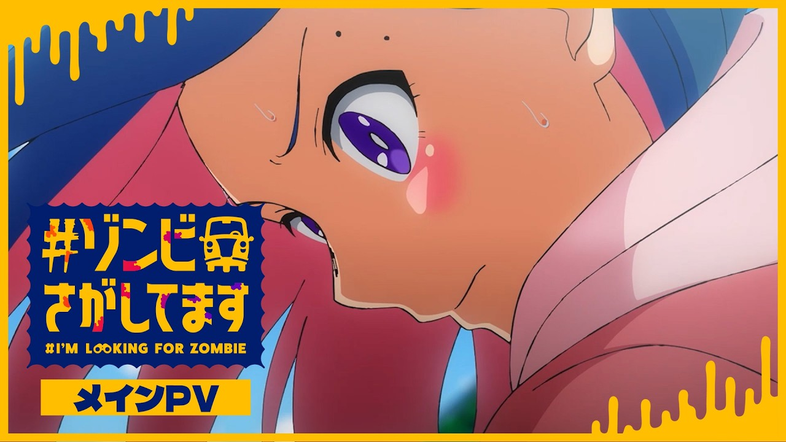

#I'm Looking For a Zombie: Release Date, Schedule & Story
The October 3 premiere is underway in Japan. See the official Saturday broadcast and streaming times, the series’ zombie-comedy premise, confirmed cast and staff, theme songs, and what viewers outside Japan should check.

Release at a glance
- Japanese TV premiere
- October 3, 2026 · Saturday at 11:30 p.m. JST on TV Asahi’s 24-station IMAnimation block
- Japan streaming
- ABEMA and d Anime Store · Saturdays at 24:00 JST; other services listed from October 8
- Studio
- studio COMET
- Outside Japan
- Check your regional catalog; service and episode times vary
Schedule checked October 25, 2026 · Official broadcast and streaming schedule
Watch the main PV
The official anime video page links to this main PV. The official pages reviewed do not expose its exact upload hour and timezone, so AniNextUp reports no uploadDate in structured video data.
When did #I'm Looking for a Zombie premiere?
#I'm Looking for a Zombie began its Japanese television run on October 3, 2026. The official anime website lists the Saturday premiere in TV Asahi's nationwide 24-station IMAnimation block, with BS Asahi and AT-X carrying separate schedules. The official site also lists Japanese streaming services and weekly release times, which are more useful than treating “October 3” as one universal drop time.
What is the Japanese broadcast schedule?
The official broadcast and streaming schedule gives TV Asahi's IMAnimation slot as every Saturday at 11:30 p.m. Japan time, starting October 3. BS Asahi lists the same start date and a 1:00 a.m. late-night slot; AT-X began on Monday, October 5 at 9:00 p.m., with repeat broadcasts Wednesday morning and Friday afternoon. Japanese schedules sometimes describe after-midnight times as part of the previous evening, so viewers should check the station's calendar for the actual local date as well as the clock time. The official page warns that broadcast times can change.
ABEMA and d Anime Store are listed for the earliest Japanese stream, every Saturday at 24:00 from October 3. In ordinary calendar notation, 24:00 Saturday is midnight at the start of Sunday. The official schedule then lists a wider group of on-demand services from Thursday, October 8 at 24:00, including U-NEXT, Anime Hodai, Nico Nico, DMM TV, Lemino, FOD, Bandai Channel, Hulu, TELASA, Prime Video and TVer. The page also names pay-per-view services separately. These are Japanese listings; they do not establish that each service is available in another country. Related reading: Dandivine Release Date & Where to Watch: Japan Schedule, Cast and Story.
Where can viewers outside Japan watch?
Availability depends on country and platform rights. The official Japanese schedule confirms domestic stations and services, but the sources reviewed for this update do not confirm a current international platform list or one global release hour. Check the anime’s listing in your own regional catalog for audio, subtitles and episode timing; Japanese ABEMA and d Anime Store availability should not be assumed abroad.
What is the story about?
The official series introduction sets the story thirteen years after “Akai Hi,” a mysterious outbreak that infected and killed 90 percent of humanity. Survivors left the cities and built isolated villages. Aki is part of a younger generation that has no memory of the pre-collapse world. She leaves her village with childhood friends Natsuki and Haru to look for her father, who went away earlier. They encounter zombies outside, but the official premise also describes the ruined world as vast, unfamiliar and beautiful. Yuu and Sakura join them along the way.
That contrast explains the series' “non-everyday” comedy angle: the setting is dangerous, while the characters' curiosity about abandoned places and ordinary remnants of civilization gives the journey a lighter, exploratory mood. The official premise does not disclose the father's fate, so a release guide should not present a reunion or final answer as confirmed. The title's hashtag is part of its Japanese branding, and the story is adapted from Katsuwo's manga rather than an original television script. Related reading: Cosmoship Yamato √2199 Release Date: Story, Cast and What’s Confirmed.
Who voices the characters, and who makes the anime?
The official cast page lists Kyori Nemoto as Aki, Lynn as Natsuki, Toshiya Miyata as Haru, Hibiki Yamamura as Yuu and Yuka Nukui as Sakura. Additional listed characters include Mikazuki, voiced by Yoko Hikasa, and Aki's father, voiced by Kosuke Toriumi. Shinya Une directs the television anime at studio COMET. Kyohei Suzuki is assistant director; Kenichi Yamashita and Aki Itami handle series composition and scripts; Narumi Shimoji designs the characters; and Kenta Higashiohji composes the music. These credits matter for viewers comparing the series with Katsuwo's earlier comedy work: the official staff information confirms the same creator's manga adaptation, while the animation and television storytelling are handled by a separate production team.
What are the opening and ending songs?
The official music page names “Raki Raki” by Surii as the opening theme and “Soft Apocalypse” by cadode as the ending theme. The music is part of the series' tonal contrast: the story moves through a zombie-affected landscape, but its presentation is not described by the official site as nonstop horror. The main PV introduces the anime's cast and setting alongside the opening song. AniNextUp links the official main PV below; the official video listing reviewed for this update does not show the exact original upload hour and timezone, so no VideoObject uploadDate is asserted. Related reading: Dr. STONE TERRAFORMING: Story, Trailer and Release Status.
Is the original manga finished?
KADOKAWA lists three collected volumes of Katsuwo's #ゾンビさがしてます (“#I'm Looking for a Zombie”), with the third volume released January 26, 2024. The publisher's description for the final volume follows Aki and her friends as they trace a message from her father to Tokyo Tower. That lets manga readers understand that the source has a finite three-volume run; it does not confirm how many chapters the anime adapts or whether the television version changes the ending. Viewers who want to avoid spoilers can begin with the anime, while readers who want the complete original story can look for all three volumes through KADOKAWA and their usual book retailers.
What is confirmed, and what should viewers still check?
The confirmed essentials are the October 3 Japanese premiere, the named Japanese weekly schedule, the domestic streaming services, the principal premise, cast, staff and songs. The official sources reviewed here do not provide one worldwide release hour, a single global platform list, or an episode count in the schedule page. Those details can vary by license and should be checked against the current local service. For weekly changes, use the official schedule and official video page; the latter links the main PV and character videos. This keeps a useful viewing guide clear about the difference between Japan's confirmed timetable and information that depends on a viewer's region.
Editorial review: · Sources, updates & corrections · Report an error
Related releases


Official sources: series, cast and staff · broadcast and streaming schedule · official videos · music · KADOKAWA volume 3 listing. Updated October 25, 2026 · Sources, updates & corrections.